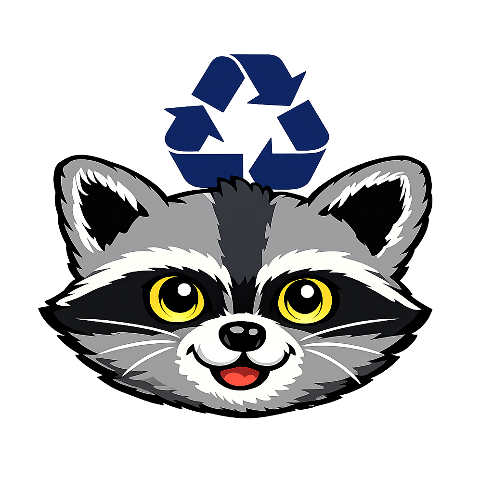

River's Scraps of Tips

No time for hobbies but still want to cut down on your waste? Here are my top suggestions for things you can easily implement into your routine.
Turn trash into treasure and embrace your inner raccoon - curious, crafty, and utterly unique!

No time for hobbies but still want to cut down on your waste? Here are my top suggestions for things you can easily implement into your routine.